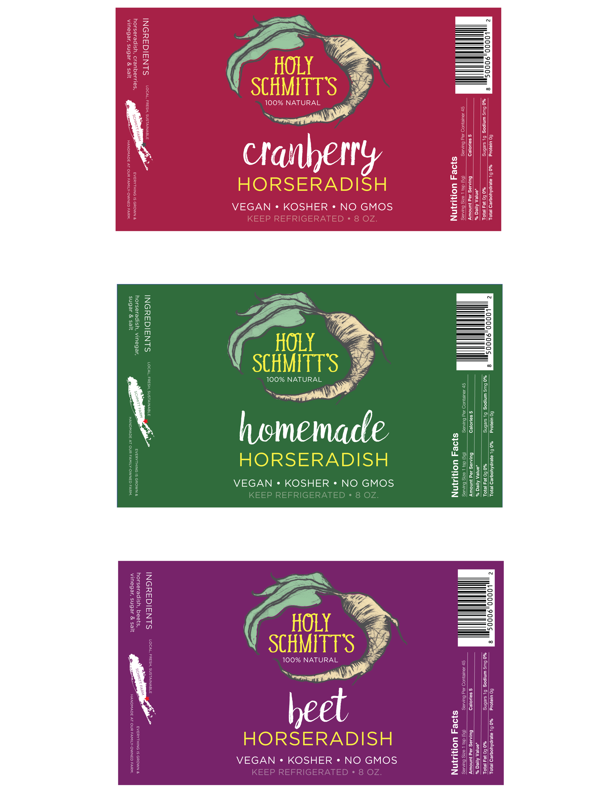
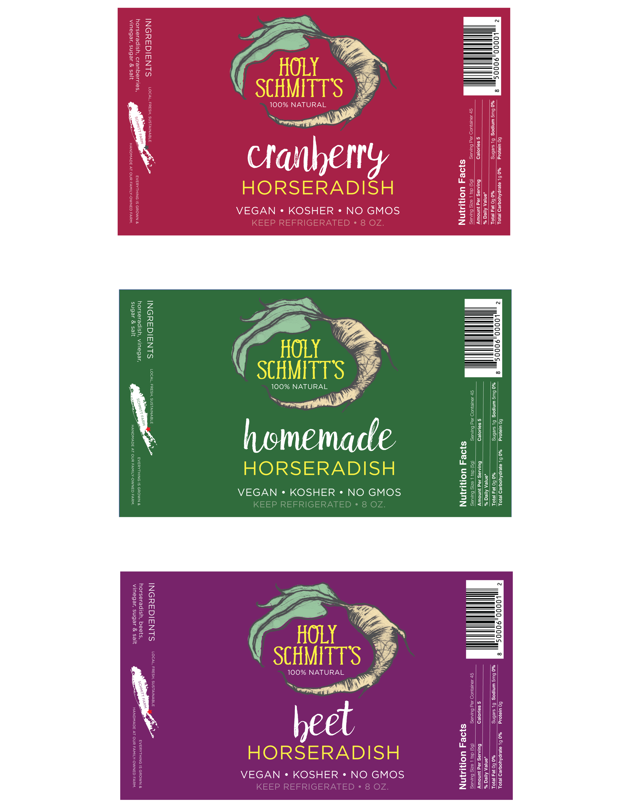

Holy Schmitt's, a family-owned horseradish company, wanted to redesign their product packaging for a more modern look that would appeal to health-conscious individuals. Their horseradish is still grown on their very own farms.
 

This promotional poster was created by the senior designer, and the logo was created by me.